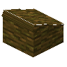

Jungle Lower Base Roof
mcwroofs:jungle_lower_roof
英文名: Jungle Lower Base Roof命名空间 ID:
mcwroofs:jungle_lower_roof类型: 方块所属模组: Macaw's Roofs资料检索: 🔎 在 MC百科 搜索「Jungle Lower Base Roof」合成获得 (1)
有序合成Macaw's Roofs


原始 JSON
{
"type": "minecraft:crafting_shaped",
"group": "lower",
"pattern": [
" WW",
"WWS"
],
"key": {
"W": {
"item": "minecraft:jungle_log"
},
"S": {
"item": "minecraft:stick"
}
},
"result": {
"count": 4,
"id": "mcwroofs:jungle_lower_roof"
}
}